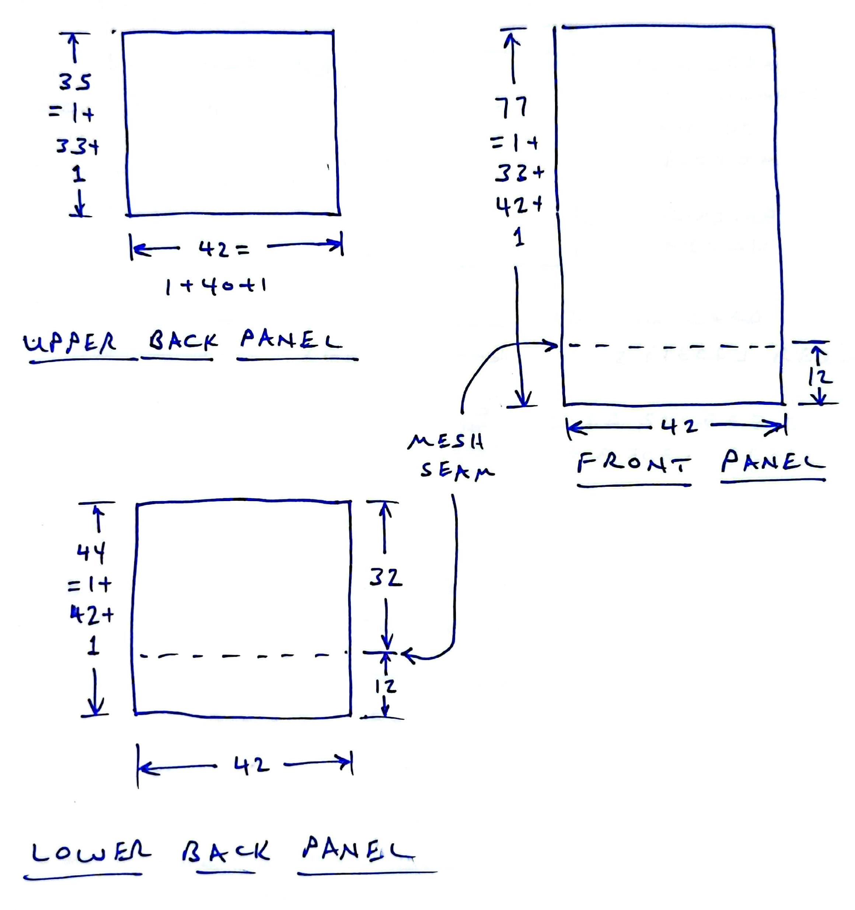
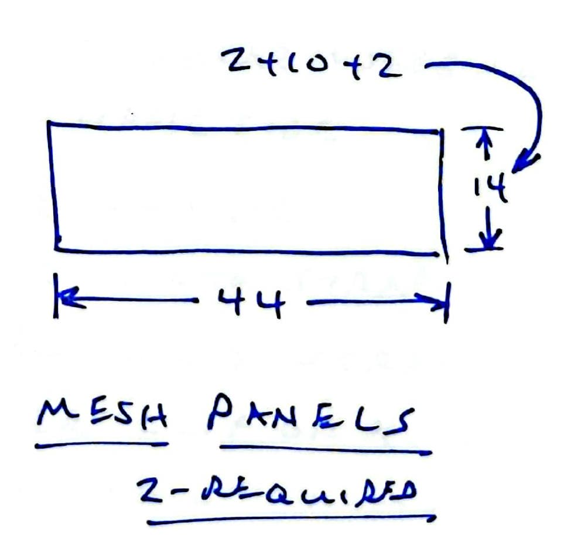
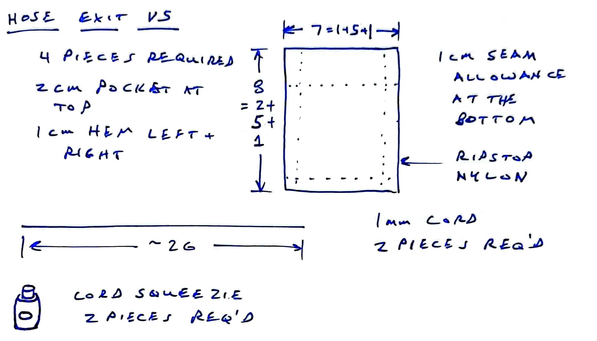
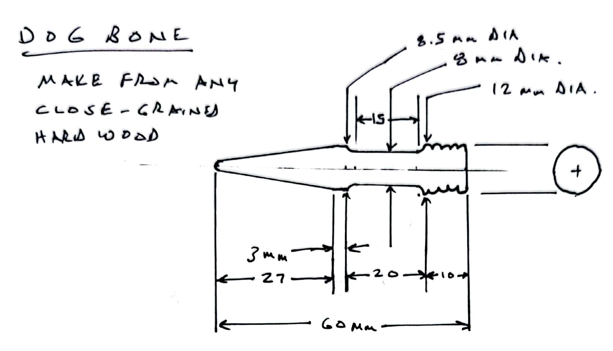

4 Parts
The main pouch covers the width of the buggy’s backplate and the height from the top of the plastic plate nearly to the rear axle. The body is constructed 3 panels of Ottertex® Waterproof Canvas. The panels need to fit a small GT-Race R6 buggy are shown in Figure 4.1. Cut one of each of these panels.

Resizing note: The width dimension of the panels above should be tailored to the buggy size. S:42, M:45, L:48
Option B note: The height dimensions should be adjusted for the closure option used.
Upper back panel height - A:35, B:44
Front panel height - A:77, B:86.
4.1 Mesh floor
The backpack requires two 44 x 14 cm mesh panels as shown in Figure 4.2 to form the mesh floor of the main pouch.

Resizing note: The width dimension of the mesh panelshould be tailored to the buggy size. S:44, M:47, L:50
4.2 Hose exits
The hose exits require four 7 cm x 8 cm panels of ripstop nylon, two pieces of 1mm cord 26 cm long, and two cord locks as shown in Figure 4.3

4.3 Fittings
Cut these parts from 340 cm of 5/8” (15mm) Bluewater climb-spec tubular webbing
(1) 25 cm for connecting a plastic side-release buckle to the flap closure
(1) 35 cm for the center hanger
(1) 120 cm for upper girth strap
Resizing note: The upper girth strap should be tailored to the buggy size. S:120, M:126, L:132
- (1) 105 cm for lower girth strap
Resizing note: The lower girth strap should be tailored to the buggy size. S:105, M:111, L:117
- (1) 65 cm to connect the lower clip of the plastic side-release buckle to the rear axle
Option B note: cut (2) 10cm for connecting two plastic side-release buckles to the corners of the flap closure. Cut and additional 65 cm strap to connect the lower clip of the plastic side-release buckle to the rear axle
Also cut these small parts from sewable 2.5 cm-wide hook-and-loop closure strips
- Dirt-out closure: a matched pair of strips 38 cm long
Resizing note: The dirt-out closure should be tailored to the buggy size. S:38, M:41, L:44
Tri-fold closure: a matched pair of strips 5 cm long
Long bite valve anchor A: 15 cm of loop strip and 3 cm of hook strip
Short bite valve anchor A: 12 cm of loop strip and 39 mm of hook strip
Cut these small parts from insignia cloth:
Wrapped bite valve anchor: (2) 5 x 5 cm squares of black cloth (one for each bite valve anchor)
Sticky bite valve anchor: (1) 2 cm diameter circle and of white or black cloth
Sticky bite valve anchor: (1) 5 cm diameter circle and of white or black cloth
Purchase six 3 mm x 15 mm marine grade welded stainless-steel rings: Two for each girth strap and two for the center hanger.
Purchase one plastic side-release buckle for 2 cm strap.
Option B note: A:1 buckle, B: 3 buckles
Purchase 2 or more of 18 mm x 3 mm nickel-plated neodymium magnets.
Cut 20 cm of 1mm line to thread the center hanger into the top of the bladder.
Cut a dirt-out flap of 38 x 8 cm panel from brightly-colored ripstop nylon.
Resizing note: The dirt-out flap should be tailored to the buggy size. S:38, M:41, L:44
Make a custom dogbone to connect the bladder to the loop of the center hanger. Turn the wood according to Figure 4.4 Sand the whole piece but pay special attention to the tapered end and the cylindrical 8mm diameter section. That will assure the dogbone can slide in and back out with ease.
